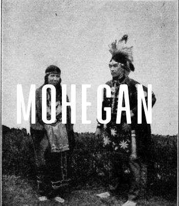
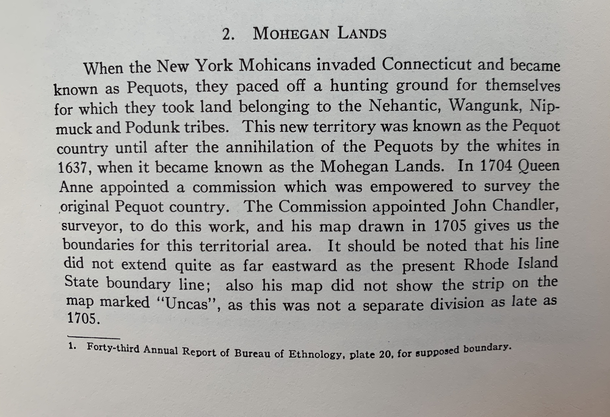
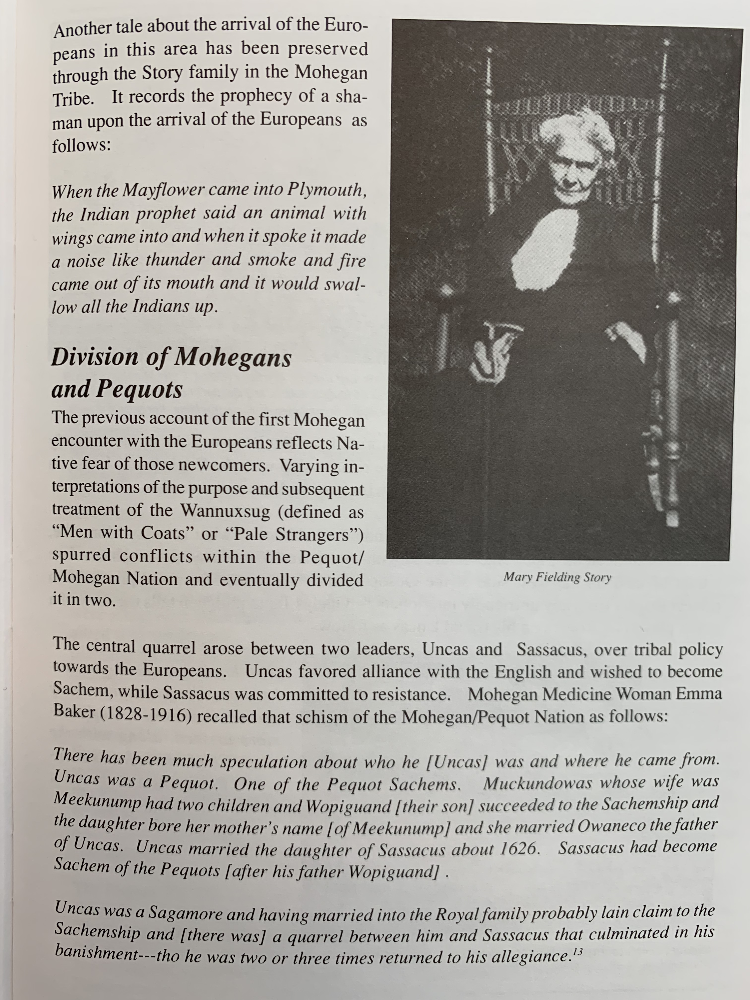
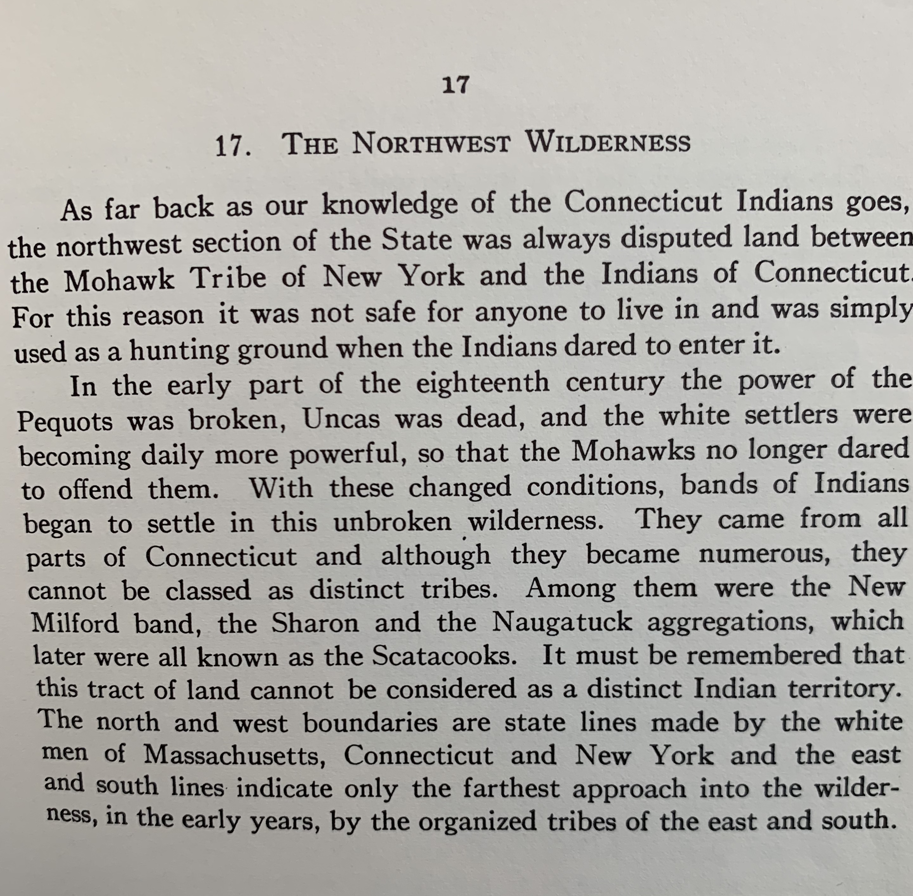

Before the seventeenth century, the Mohegan were part of the Pequot Tribe, which emerged among Algonquian
peoples located in south central present New England.
Uncas
The early 1600s were a critical period of change for Connecticut tribes, who spoke
various Algonquian languages. The pressure from rapidly expanding European settlements created competition
for land and resources, while new infectious diseases were decimating Indian populations at an alarming rate.
Within the Pequot Tribe at that time, a dispute erupted between the Pequot Sachem (head chief) Sassacus and
the leader Uncas. Uncas left with his followers, who called themselves the Mohegan, or Wolf People, like their
ancestors. Each tribe had its own idea of how to deal with conflicts with the English and other Europeans.
Uncas (1598-1683) became Sachem of the Mohegan Tribe, which favored collaboration with the English colonists.
The Pequot under Sassacus chose to fight the colonists, and other local tribes took sides in the Pequot War,
which lasted from 1637-1638. Seeing the great losses brought on by continued fighting, Uncas had befriended
the European invaders. This controversial decision brought Uncas and the Mohegan people into an uneasy alliance
with the English in the ensuing war with the Pequot (1637-1638). The Mohegan helped the English defeat the Pequot.
Uncas settled his people in a village at Shantok on the Thames River, which the Tribe defended from a Narragansett
invasion. It was sparked by related European as well as Indian conflicts. Finally, the Mohegan Tribe's alliance with
the English kept its people relatively safe during the colonists attacks on Native Americans during King Philip's War
and afterward.


